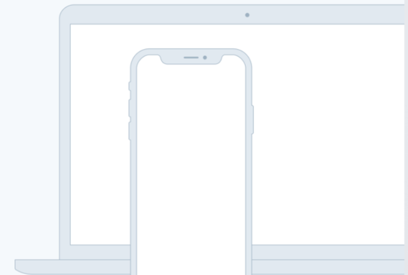

A device that enables collaboration will lessen the chance of work having to be completely redone.
In such a test, the user performs realistic tasks by interacting with the paper prototype
First Link >Three techniques of paper prototyping used for usability testing are comps, wireframes
Second Link >Rapid prototyping involves a group of designers who each create a paper prototype
Third Link >Functionality is similarly unimportant, but in this case are closer to the final product
Fourth Link >In the context of information architecture, information is separate from both knowledge and data, and lies nebulously between them.